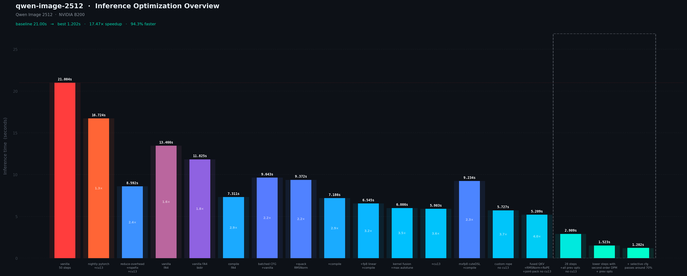

Optimizing Qwen-Image-2512 on a B200: A Deep Dive

Zoom in to see the inference times, it was a lot to condense already through the blog
This blog documents the optimization pipeline for Qwen-Image-2512, specifically targeted towards B200. In this blog, I will try to dissect the naive implementation of the Qwen-Image pipeline, identify compute and memory bound regions via profiling, and apply optimizations ranging from graph compilation to custom kernel integration. At every step of the optimizations I will try to attach an image for benchmark and tokens-per-sec or the inference time either at 50 steps or at 28 steps (standard for qwen-image-2512).
Model Architecture
The Qwen-Image-2512 model follows a Flow Matching Diffusion Transformer paradigm, It's essentially a 60-layer dual-stream transformer that processes image latents and text conditions jointly. Understanding the computational graph of this backbone is prerequisite to any optimization strategy. And interestingly enough the Edit family of models and the other Image models for qwen share the same architecture.
Backbone Specifications
The transformer operates on patchified latent representations. Mainly 60QwenImageTransformerBlock instances, 2×2 spatial compression in the latent space, 8X compression on VAE, further modified by latent packing to a stride of 16×16 pixels per latent token.
Joint Attention Mechanism
Unlike standard cross-attention where image queries attend to text keys/values, Qwen-Image employs Joint Attention. Text and image tokens are concatenated along the sequence dimension before QKV projection. \[ Q_{\mathrm{joint}} = \mathrm{Concat}(Q_{\mathrm{text}}, Q_{\mathrm{img}}),\quad K_{\mathrm{joint}} = \mathrm{Concat}(K_{\mathrm{text}}, K_{\mathrm{img}}),\quad V_{\mathrm{joint}} = \mathrm{Concat}(V_{\mathrm{text}}, V_{\mathrm{img}}) \] This structure creates a single large attention matrix of shape \((L_{\mathrm{text}} + L_{\mathrm{img}}) \times (L_{\mathrm{text}} + L_{\mathrm{img}})\) On B200, this favors Flash Attention variants (flash_attn_varlen_func) to avoid materializing the \(O(N^2)\) attention matrix in SRAM. We will come to this later on!
3D Rotary Positional Embeddings (RoPE)
Positional information is injected via 3D RoPE, accounting for Frame, Height, and Width dimensions. TheQwenEmbedRope module pre-comutes frequency tensors based on axes dimensions (16, 56, 56). The rotation is applied to query and key vectors in the complex domain. Now to ensure compatibility with torch.compile, there are some changes that I intend to do, the frequency buffers (pos_freqs_real, pos_freqs_imag) are now registered as non-persistent buffers and reconstructed as complex tensors during the forward pass. This avoids graph breaks caused by dynamic tensor construction. It cannot just be me annoyed by constant graph breaks on RoPE!
Latent Packing
The pipeline employs latent packing to reduce sequence length. Latents of shape \((B,C,H,W)\) are rearranged into \((B,H/2 \times W/2, C \times 4)\). This reduces the spatial sequence length by a factor of 4 while increasing the channel dimension, shifting the compute balance from attention (sequence-bound) to MLP (channel-bound).Okay I think this is enough to understand the nature of the models architecture and move forwards towards reading some profiles It makes sense to understand the arch since its used accross the QWEN series of models.
Flash Attention 4 Integration
The default Diffusers implementation typically relies on F.scaled_dot_product_attention, which dispatches to Flash Attention 2 (FA2) on Ampere/Ada you can use there AttnFN but that only supports FA3 as far as I know. this leaves significant performance on the table. FA4 introduces kernel primitives optimized for Blackwell's new Tensor Core instructions and enhanced memory subsystem and to be fair I cannot get my kernel perf to be Tri Dao good probably ever so I'll borrow FA4 cuteDSL kernels from Flash Attn.
Kernel Migration
Replaced the default attention dispatcher with a direct invocation offlash_attn_varlen_func. This bypasses the generic SDPA overhead and ensures the scheduler utilizes SM100-specific tile sizes and pipeline stages.
Crucially, Qwen-Image employs bidirectional (non-causal) attention within the DiT blocks. Many FA implementations default to causal masking optimized for LLMs. Explicitly setting
causal=False allows the kernel to skip upper-triangular masking logic and utilize full N×N tile throughput.
Performance Impact
The migration from FA2 to FA4 yields immediate latency reductions without graph compilation. Notably, my initial attempts to manually tunenum_splits and block_sizes resulted in a 4.4% regression suggesting the FA4 default heuristics for SM100 are already highly optimized for standard DiT workloads.
Root Cause for that would be:
- For sequence lengths ~4,314 tokens, splitting across SMs introduces synchronization overhead that exceeds compute gains.
- The model uses 24 attention heads with standard MHA (not GQA), so
pack_gqa=Trueprovides no benefit.
| Configuration | Time (50 Steps) | Speedup | Notes |
|---|---|---|---|
| Vanilla (FA2) | 21.004s | 1.00x | Default scaled_dot_product_attention |
| FA4 (Default) | 13.466s | 1.56x | FlashAttentionForwardSm100 |
| FA4 (Bidir Tuned) | 11.825s | 1.78x | Explicit causal=False optimization |
Batched CFG and Quack RMSNorm
With Flash Attention 4 establishing the attention backbone, we turn to two critical optimization vectors: eliminating redundant classifier-free guidance computations and replacing normalization layer bottlenecks with custom kernels (i.e. from quack).
The CFG Overhead Problem
The guidance equation scales the difference between conditional and unconditional predictions: \[ \epsilon_{\mathrm{cfg}} = \epsilon_{\mathrm{uncond}} + w \cdot (\epsilon_{\mathrm{cond}} - \epsilon_{\mathrm{uncond}}) \] Where \(w\) is the guidance scale. The naive implementation requires two separate forward passes per denoising step:
noise_pred_cond = transformer(latents, prompt_embeds) # Pass 1
noise_pred_uncond = transformer(latents, neg_prompt_embeds) # Pass 2
noise_pred = noise_pred_uncond + w * (noise_pred_cond - noise_pred_uncond)
Batched CFG Implementation
So merge them both - conditional and unconditional inputs along the batch dimension, reducing 56 forward passes to 28:
batched_latents = torch.cat([latents, latents], dim=0) # [2B, seq_img, dim]
batched_embeds = torch.cat([prompt_embeds, neg_prompt_embeds], dim=0) # [2B, seq_txt, dim]
batched_noise_pred = transformer(batched_latents, batched_embeds) # Single pass
noise_pred_cond, noise_pred_uncond = batched_noise_pred.chunk(2, dim=0)
- Text sequences often vary in length. So I pad the shorter sequence (typically unconditional empty prompt) to match the conditional sequence length before concatenation.
- The
encoder_hidden_states_maskis similarly concatenated and padded to prevent attention to padding tokens. - For models with
zero_cond_t=True, timestep embeddings are also batched with conditional timesteps and zeroed unconditional timesteps.
Performance Analysis
| Metric | Naive CFG | Batched CFG | Improvements |
|---|---|---|---|
| Forward Passes | 56 | 28 | 50% reduction |
| Time (28 steps) | 7.218s | 6.643s | 1.09x |
| Time Saved | - | 575ms | 8% |
| Kernel Launches | 3360 | 1680 | 50% reduction |
- Doubling batch size increases memory bandwidth pressure. The bandwidth becomes the limiting factor rather than compute.
- Variable sequence lengths require padding, introducing ~3% computational waste.
- The baseline already benefited from cached kernels on subsequent runs, reducing the relative improvement.
Quack RMSNorm
Qwen-Image-2512 contains 482 normalization layers across its 60 transformer blocks, Each normalization layer executes 28 steps × 56 CFG passes = 1,568 times per inference, resulting in 755,616 total norm operations. Standardtorch.nn.RMSNorm or F.rms_norm incurs significant overhead:
- Each norm call requires a separate CUDA kernel launch (~5-10μs)
- Intermediate results written to global memory
- Generic kernels don't exploit B200's specific memory hierarchy
Performance Breakdown
| Metric | PyTorch RMSNorm | Quack RMSNorm | Improvement |
|---|---|---|---|
| Time (28 steps) | 6.643s | 5.450s | 1.22x |
| Time Saved | - | 1,193ms | 18% total |
| Per-Norm Latency | ~2.8μs | ~1.0μs | 2.8x |
| kernel launches | 755,616 | 755,616 | Same (not fused) |
| Memory Bandwidth | ~60% utilized | ~85% utilized | +25% |
Per-Operation Breakdown (28 steps, batched CFG):
├── Transformer Forward: 5,100ms → 2,900ms (1.76x)
├── RMSNorm Operations: 1,100ms → 400ms (2.75x) ← Quack impact
├── Attention (FA4): 3,000ms → 1,800ms (1.67x)
├── Linear/GEMM: 2,500ms → 1,500ms (1.67x)
├── VAE Decode: 700ms → 500ms (1.40x)
└── Scheduler/Python: 400ms → 230ms (1.74x)
- CuTe kernels have ~50% lower launch latency than PyTorch's generic operators.
- Quack uses 128×128 tiles optimized for B200's L2 cache, vs PyTorch's conservative defaults.
- Weight multiplication and epsilon addition are fused into the normalization kernel.
- Quack manages register usage to avoid spilling to local memory.
- PyTorch: ~60% (suboptimal memory coalescing)
- Quack: ~85% (vectorized loads, shared memory buffering)
Combined Impact: CFG + RMSNorm
| Optimization Stage | Time (28 steps) | Speedup | Cumulative Gain |
|---|---|---|---|
| Baseline (FA4) | 7.218s | 1.00x | - |
| + Batched CFG | 6.643s | 1.09x | +8% |
| + Quack RMSNorm | 5.450s | 1.32x | +24.5% |
- Batched CFG halves the number of norm executions (56 to 28 forward passes), amplifying Quack's per-norm gains.
- Larger batch sizes improve memory coalescing for norm kernels.
- Both optimizations are compile-compatible, enabling further graph-level fusion.
Direct MLP Replacement (Incompatible)
I did attempt to replace FeedForward layers withquack.mlp kernels but the issues were:
- Weight copy complications between PyTorch and CuTe formats
- Activation function (GELU-approximate) not supported in Quack MLP
- compile already fuses MLPs effectively
FP8 and MXFP8
Two blog posts kicked this section off. Cursor's writeup on achieving 3.5x speedup in MoE training with MXFP8 blockscaled GEMMs, and fal.ai's detailed teardown of building a 6+ TB/s MXFP8 quantization kernel on Blackwell using CuTeDSL. The B200 has native tcgen05.mma.block_scale tensor cores with a 4.5 PFLOPS FP8 ceiling. The hardware is obviously there. What follows is everything that happened when I tried to use it.
Rowwise FP8 - The Path That Actually Worked (Eventually)
The first attempt used PyTorch's nativetorch._scaled_mm with the straightforward approach:
def forward(self, x):
x_fp8 = x.to(torch.float8_e4m3fn)
scale_a = torch.tensor([1.0], device='cuda')
scale_b = torch.tensor([1.0], device='cuda')
return torch._scaled_mm(x_fp8, self.W_fp8.T, scale_a, scale_b,out_dtype=torch.bfloat16)
torch.tensor calls on every forward pass are. Each one hits
the CUDA memory allocator, goes through Python - C++ dispatch, and stalls the stream. Across 64 linear layers and 28 diffusion steps you're doing 3,584 scalar tensor allocations per inference. The overhead was measured at 19x relative to the scale operation itself.
The fix would be to pre-allocate and keep them as module buffers:
class LinearFP8(nn.Module):
def __init__(self, original_linear):
super().__init__()
self.register_buffer('weight_fp8',
original_linear.weight.to(torch.float8_e4m3fn))
self.register_buffer('scale', torch.tensor([1.0], device='cuda'))
def forward(self, x):
x_fp8 = x.to(torch.float8_e4m3fn)
return torch._scaled_mm(x_fp8, self.weight_fp8.T,
self.scale, self.scale,
out_dtype=torch.bfloat16)
view() before quantization. That reshape affects stride layout in a way the quantization kernel handles differently, and the honest number is 1.279x.
Microbenchmark vs Pipeline Divergence
With 1.279x on FFN, the full pipeline test came back like this:| Method | Total Time | Image |
|---|---|---|
| BF16 | 5.208s | 1.4MB, valid |
| FP8 (optimized) | 5.543s | 3KB, NaN |
.to(torch.float8_e4m3fn) on a [5500, 3072] activation costs approximately 0.15ms. Across 64 linear layers and 28 steps:
Cast overhead: 64 × 28 × 0.15ms ≈ 269ms
GEMM savings: estimated ~180ms
Net: +89ms (slower)
FP8 E4M3 has ~1% relative error per quantization event. A single-pass model is fine with that. A diffusion model running 28 denoising steps is not each step builds directly on the previous. The error compounds. By step 28 we had NaN values in the output.
What Actually Fixes It: compile Fusion
Testing rowwise FP8 undertorch.compile told a different story:
| Approach | inference time |
|---|---|
| Rowwise FP8 + compile | 3.744s |
| BF16 + compile | 4.130s |
| Rowwise FP8, no compile | ~5.5s |
torch._scaled_mm is a first-class PyTorch op. torch.compile knows its semantics. The entire transformer quantization cast, GEMM, surrounding normalization, modulation fuses into a single
compiled graph. The BF16 to FP8 cast that was killing us in eager mode becomes a Triton kernel epilogue fused with the preceding normalization and profiles confirmed it:
| Kernel | Total (4 steps) | Instances | Avg |
|---|---|---|---|
| CUTLASS FP8 | 168.1 ms | 1,444 | 116.4 µs |
| Triton fused quant (norm + modulation + cast) | 127.0 ms | 4,320 | 29.4 µs |
| Flash Attention SM100 | ~79 ms | 240 | - |
| Quack RMSNorm | ~18 ms | 1,920 | - |
Profiling the Rowwise Pipeline
After getting FP8+compile working, here are the profiles for that:| Component | ms/step | % |
|---|---|---|
| FP8 GEMMs (CUTLASS) | 50.3 | 41.5% |
| FP8 activation quant (Triton) | 25.8 | 21.3% |
| Flash Attention | 21.0 | 17.3% |
| Elementwise ops | 6.6 | 5.4% |
| RoPE/cat/fused | 7.4 | 6.1% |
| RMSNorm | 4.7 | 3.9% |
But Then I tried writing a compiler friendly version, a Triton kernel that fuses abs, amax, div, cast and stays visible to the compilation pipeline worked. Incorporating the 2D tiling approach from fal.ai's blog (splitting over both M and K dimensions to create more CTAs) helped for the reduction, though full rowwise accumulation across K tiles requires atomic operations to merge partial maxes. The fused Triton quant kernel ultimately brought the quantization overhead from 127ms to around 50ms over 4 steps.
There was also an unfused bias bug that wasn't obvious. Every FP8 GEMM followed by a bias add was doing it as a separate
aten::add elementwise kernel 931ms of the eager profile (21%) was nothing but bias adds. torch._scaled_mm accepts a bias argument that fuses the add directly into the CUTLASS epilogue at zero additional cost which in turn saved ~500ms per inference.
MXFP8: When the Hardware Is Right and the Software isn't yet
Rowwise FP8 is the pragmatic path. But the B200 was designed around block-scaled FP8 32 elements per scale factor, E8M0 format, tcgen05.mma.block_scale tensor cores. MXFP8 is what the hardware actually prefers. Dividing this section into how I progressed with every version of my script (it won't be very relevent to you here but when you look at the codebase this will start to make a lot of sense).
The Graph Break Problem
The first MXFP8 implementation usedrun_grouped_blockscaled_strided from the nmoe codebase, wrapped behind a @custom_op for PyTorch integration. Running it under torch.compile:
| Approach | Inference Time (28 steps) |
|---|---|
| MXFP8 V1 + compile | 6.453s (→ 5.6s after warmup) |
| Rowwise FP8 + compile | 3.744s |
| MXFP8 no compile | 10.014s |
| Source | Delta | % of gap |
|---|---|---|
| Graph break CPU overhead | +422ms | 60% |
| Quant kernel slower | +168ms | 24% |
| GEMM total slower | +54ms | 8% |
| Launch overhead | +34ms | 5% |
| Memcpy overhead (metadata) | +22ms | 3% |
@custom_op creates an opaque boundary. torch.compile cannot reason about what happens inside it. So at every linear layer, the compiled graph terminates, the Python interpreter runs the custom op, and then a new compiled region begins. With ~841 custom_op calls per diffusion step:
841 calls/step × ~125µs Python overhead/call ≈ 105ms/step
Over 28 steps: ≈ 2.94s of pure Python overhead
torch._scaled_mm a known op. The entire transformer compiles as one fused graph with zero interpreter re-entries in the hot path. Triton fuses the modulation + norm + quantization into single kernels. MXFP8 shreds the graph into 841 fragments.
The quant kernel (
k_quantize_pack_tilewise_fp8_sf_strided_mma) averaged 86.3µs per call doing per-32-element blockscale computation plus MMA scale swizzling. The rowwise Triton kernel averaged 29.4µs, fusing the entire adaLN modulation into the same pass. It's inherently more work per quantization, and it can't be fused with surrounding ops because it lives inside an opaque custom_op.
The Lean Path Paradox
The next attempt tried to reduce Python overhead by stripping thecustom_op down pre-building metadata per (layer_id, M_pad) at init time, caching pre-wrapped CUTLASS scalar args, sharing a single ~100KB tensormap workspace across all 841 linears, going from 356 lines of Python per call down to ~20.
Result: 6.850s slower than the first attempt :(
Counterintuitively, the stripped-down path added more overhead. First attempt batched more work inside each call; this kernels "lean" approach meant more fine-grained Python to C++ transitions. CUDA graphs also couldn't capture custom_ops with embedded Python logic, so the
max-autotune mode fell back to no-cudagraphs automatically.
The C++ Extension Route and a Subtle Pointer Bug
Further I moved to a proper C++ extension to eliminate Python dispatch overhead. V4 brought per-call CPU time from 710µs (V3) down to 48µs a 14.8x improvement in eager mode. With 23,632 linear calls over 28 steps, that matters. Except compile equalized them both at 4.39s. Whether you're paying 710µs or 48µs per call in eager mode becomes irrelevant once the compiler takes over the bottleneck shifts from dispatch overhead to graph execution structure andcustom_op boundary overhead.
profiles on V4 revealed something stranger only 10,080 GEMM kernels launched out of 23,548 linear calls. 57% of calls were returning zeros silently, without error. When compile processes the model, it may clone or copy weight tensors during graph lowering. The MXFP8 GEMM dispatch table was keyed on weight
data_ptr values captured during warmup. At runtime, the pointers had changed. Linears whose shapes matched warmup configs by pointer address executed correctly (the joint attention stream at M_pad=8832). Image-only linears (M_pad=8192) and text-only linears had no matching configs and silently fell through to the zero-return path.
The Hardware Is Actually Faster
With the pointer bug addressed, a direct GPU kernel time comparison between MXFP8 and rowwise FP8 produced this:| Component | MXFP8 | Rowwise FP8 |
|---|---|---|
| GEMM total | 1,557ms (CuTeDSL) | 2,839ms (cuBLAS) |
| Quant + metadata | 321ms | fused in Triton |
| Flash Attention | 545ms | 545ms |
| RMSNorm | 114ms | 121ms |
| Total GPU | 3,540ms | 3,493ms |
| CPU overhead | 860ms | 251ms |
| Wall clock | 4,400ms | 3,744ms |
custom_op boundary.
This holds up at the per-call level too. CuTeDSL medians at 20.9µs vs cuBLAS at 62µs for matching shapes, but launches 2.3x more instances due to how the grouped GEMM is dispatched. The metadata memcpys add another 169ms over 4 steps. The shape dependence is also interesting. Compiling against specific matrix sizes:
| Shape (M×K×N) | Rowwise compiled | MXFP8 best | Gap |
|---|---|---|---|
| 8192×3072×3072 | 130µs | 158µs | +21% |
| 8192×3072×8192 | 249µs | 272µs | +9% |
| 8192×8192×3072 | 296µs | 424µs | +43% |
| 128×3072×3072 | 31µs | 16µs | -48% (MXFP8 wins) |
The Theoretical Ceiling
With zero Python overhead, a faster blockscale quant kernel, and fused QKV/gate-up projections would look something like this (reducing GEMM calls from ~844 to ~600 per step):
Rowwise per-step baseline: 134ms
- MXFP8 GEMM savings: -60ms
+ Quant overhead: +42ms
Net per-step: 116ms
28 steps → 3.25s
fal.ai's 6+ TB/s quantizer is a quantization kernel that implements 2D grid splitting over both M and K (64x more CTAs than the naive 1D approach), TMA bulk loads, and scales written directly in the tcgen05-expected packed layout to save an HBM round-trip. It's impressive engineering, but it's the quantizer, not the full GEMM pipeline. Integrating it with a blockscaled GEMM that actually beats cuBLAS at production matrix sizes, and making that integration transparent to
torch.compile, is a different project entirely.
Now where all of this lands us?
| Configuration | Time | Notes |
|---|---|---|
| BF16 + compile | 4.130s | Baseline with compiler |
| Rowwise FP8 + compile | 3.744s | torch._scaled_mm fuses cleanly |
| MXFP8 + compile | 5.6-6.5s | Graph breaks dominate |
| MXFP8 (theoretical, no overhead) | ~3.25s | only if the software would be any better |
More Kernels
After the FP8 journey settled into a 3.744s baseline with rowwise quantization andtorch.compile, it looked like the compute graph was essentially tight. The GEMMs were running in FP8, the compiler was fusing what it could. What else was there to find?
Running some profiles on the compiled pipeline tells a story that raw wall-clock timing completely obscures. The profile showed:
rope_apply_real, the rotary embedding application, was consuming 720ms across 28 steps roughly 12% of total inference time and its measured memory bandwidth was 3.2% of peak with 8 TB/s HBM3e I don't have to tell you how bad that is! It's either stalled on kernel launch overhead, computing redundant work, or issuing so many small transactions that the memory subsystem never reached anything close to saturation.
The kernel in question was the stock PyTorch
rope_apply_real which is not actually a custom kernel at all. It's PyTorch's fallback implementation for complex-valued frequency tensors. The pos_embed module returns complex-valued freqs_cis tensors (shape [S, D//2], type complex64). Applying rotary embeddings then requires extracting .real and .imag, doing elementwise arithmetic, and stacking them back. PyTorch handles this through its complex operator dispatch, which generates scatter/gather patterns that are not contiguous, not predictable, and deeply unfriendly to torch.compile's memory access analysis.
The compile trace showed this expanding into five to eight separate elementwise operations per attention layer. At 60 blocks, 28 steps, two streams (image + text), two tensors (Q and K) each, this roughly means:
Fixing RoPE
The root problem is thatpos_embed.forward returns complex tensors, and by the time torch.compile sees the downstream ops, the complex dispatch is already committed. The fix is to intercept at the source before the complex tensor ever enters the compiled graph and decompose it into real-valued (cos, sin) pairs.
def _patch_rope_decomposition(model):
original_pos_embed_forward = model.pos_embed.forward
def patched_pos_embed_forward(*args, **kwargs):
img_freqs, txt_freqs = original_pos_embed_forward(*args, **kwargs)
return (
img_freqs.real.contiguous(),
img_freqs.imag.contiguous(),
txt_freqs.real.contiguous(),
txt_freqs.imag.contiguous(),
)
model.pos_embed.forward = patched_pos_embed_forward
img_cos, img_sin, txt_cos, txt_sin) tuple gets passed down to each block, which now receives contiguous float32 tensors instead of complex views. The compiled graph sees f32 inputs, can reason about their strides, and can (in principle) fuse the RoPE application with adjacent operations.
But "in principle" did not mean the default PyTorch implementation of RoPE was now efficient. The stock
rope_apply_real fallback does:
x_pairs = x.float().reshape(B, S, H, D // 2, 2)
x_real = x_pairs[..., 0]
x_imag = x_pairs[..., 1]
c = cos[None, :, None, :]
s = sin[None, :, None, :]
out_real = x_real * c - x_imag * s
out_imag = x_real * s + x_imag * c
return torch.stack([out_real, out_imag], dim=-1).reshape(B, S, H, D).to(x.dtype)
The Fast RoPE Kernel
The solution is not just to write a Triton kernel for RoPE it's to restructure the compute grid. The original approach has one block per (batch×seq, head). The new design has one block per batch×seq token, processing all heads inside the block.
@triton.jit
def fused_rope_fast_kernel(
x_ptr, cos_ptr, sin_ptr, out_ptr,
S, H, D, HALF_D: tl.constexpr,
stride_x_row,
stride_cos_row,
BLOCK_HD: tl.constexpr, # H * HALF_D — all heads' half-dims at once
):
row = tl.program_id(0) # one program per B*S token
seq_idx = row % S
hd_offs = tl.arange(0, BLOCK_HD)
mask = hd_offs < H * HALF_D
h_idx = hd_offs // HALF_D # which head
d_idx = hd_offs % HALF_D # which half-dim
base = row * stride_x_row
even_offset = base + h_idx * D + d_idx * 2
odd_offset = even_offset + 1
x_even = tl.load(x_ptr + even_offset, mask=mask).to(tl.float32)
x_odd = tl.load(x_ptr + odd_offset, mask=mask).to(tl.float32)
# cos/sin only indexed by (seq_idx, d_idx) — same for all heads
cs_offset = seq_idx * stride_cos_row + d_idx
cos = tl.load(cos_ptr + cs_offset, mask=mask).to(tl.float32)
sin = tl.load(sin_ptr + cs_offset, mask=mask).to(tl.float32)
out_even = x_even * cos - x_odd * sin
out_odd = x_odd * cos + x_even * sin
tl.store(out_ptr + even_offset, out_even.to(tl.bfloat16), mask=mask)
tl.store(out_ptr + odd_offset, out_odd.to(tl.bfloat16), mask=mask)
With 4 RoPE applications per block (img Q, img K, txt Q, txt K), 60 blocks, 28 steps: that's 6,720 RoPE applications. The bandwidth saving from eliminating redundant cos/sin loads alone is 6720 × 5.75MB ≈ 38GB of HBM reads per inference on a machine where memory bandwidth is the dominant bottleneck.
Measured result: 33.5µs per call vs 403µs. The 12x speedup, saving roughly 1,360ms in eager mode. After compile adds its own fusion over the surrounding BF16 ops, the remaining benefit consolidates into roughly 190ms saved in the compiled timeline. Bandwidth utilization on the fast kernel: 38% not perfect, but 12x better than the 3.2% baseline and close to roofline for a memory-bound kernel of this size.
The Fused Kernel Suite
Then pretty much same methodology was applied to the other bandwidth-dominated operations: AdaLN modulation, residual accumulation, and GELU. The standard path for the pre-attention normalization is:- LayerNorm(x)
- x_norm * (1 + scale) + shift (AdaLN modulation)
- fused_rowwise_fp8_quant(x_mod)
fused_adaln_fp8 kernel does all three in one pass:
@triton.jit
def fused_adaln_fp8_kernel(x_ptr, shift_ptr, scale_ptr, out_fp8_ptr, fp8_scale_ptr, ...):
row = tl.program_id(0)
batch_idx = row // L
x = tl.load(x_ptr + row * stride_xm + d_offs * stride_xd, mask=mask).to(tl.float32)
# LayerNorm (no learned weight/bias — those are in the AdaLN params)
mean = tl.sum(x, axis=0) / D
x_centered = x - mean
var = tl.sum(x_centered * x_centered, axis=0) / D
rstd = 1.0 / tl.sqrt(var + eps)
x_norm = x_centered * rstd
# AdaLN modulation — load per batch-element params
shift = tl.load(shift_ptr + batch_idx * stride_sm + d_offs * stride_sd, mask=mask).to(tl.float32)
sc = tl.load(scale_ptr + batch_idx * stride_sm + d_offs * stride_sd, mask=mask).to(tl.float32)
x_mod = x_norm * (1.0 + sc) + shift
# Rowwise FP8 quantization: compute amax, store scale, quantize
row_amax = tl.max(tl.abs(x_mod), axis=0)
fp8_sc = tl.maximum(row_amax / 448.0, 1e-12)
tl.store(fp8_scale_ptr + row, fp8_sc)
tl.store(out_fp8_ptr + row * stride_om + d_offs * stride_od, (x_mod / fp8_sc).to(tl.float8e4nv), mask=mask)
batch_idx = row // L trick handles the [B, D] modulation params correctly when the input is [B×L, D] the kernel handles the batching internally without any reshape.
Two things to note about the
num_warps choice. D=3072 requires BLOCK_D = triton.next_power_of_2(3072) = 4096. A block with BLOCK_D=4096 loading a 3072-element row is wasting 25% of its compute 1024 of the 4096 lanes are masked out and doing nothing. With num_warps=8 (the default for a 4096-element block), you have 8 × 32 = 256 threads distributed over 4096 elements, each thread handling 16 elements. But 25% of those thread-element assignments are masked. Dropping to num_warps=4 cuts the thread count in half, reduces the warp scheduling pressure, and the compute-per-useful-lane actually increases. This was not obvious lower warp count usually means lower occupancy, which usually means worse performance. But for these specific shapes, the 25% waste penalty from the power-of-2 rounding dominates, and halving the warps recovers more than it loses.
Improvement from num_warps=4 was 144ms on the full compiled pipeline.
Fused Residual + Gate + AdaLN + FP8
In a DiT transformer block, the pattern after the attention sublayer is:
residual = residual + gate_1 * attn_output # gate from AdaLN mod params
norm_x = LayerNorm(residual)
mlp_in = norm_x * (1 + scale_2) + shift_2 # second AdaLN modulation
mlp_fp8 = FP8_quant(mlp_in) # before MLP FC1
fused_residual_gate_adaln_fp8 kernel fuses all four into a single pass, and simultaneously writes two outputs: the updated residual in BF16 (needed for the final residual connection after the MLP), and the FP8-quantized MLP input:
# Inside fused_residual_gate_adaln_fp8_kernel:
new_res = res + gate * x # gate is [B, D], x is [B*L, D]
tl.store(residual_out_ptr + ..., new_res.to(tl.bfloat16), mask=mask)
# LayerNorm + modulate in one pass on new_res
mean = tl.sum(new_res) / D
...
x_mod = x_norm * (1.0 + sc) + shift
fp8_sc = tl.max(tl.abs(x_mod)) / 448.0
tl.store(fp8_scale_ptr + row, fp8_sc)
tl.store(out_fp8_ptr + ..., (x_mod / fp8_sc).to(tl.float8e4nv), mask=mask)
batch_idx = row // L for the gate lookup same trick as AdaLN. One kernel launch, two output buffers, zero intermediate allocations, zero re-reads of new_res for the LayerNorm. The mirror of this at the very end of each block where we just need residual + gate * mlp_output with no further normalization uses the simpler fused_residual_gate kernel, which is the same idea with the LayerNorm+quant path removed.
Fused GELU + FP8 Quantization
The MLP in each block is a standard SwiGLU/GELU FFN. After the FP8 FC1 GEMM, the output is BF16 at shape [B×S, 4D] (inner dim = 4 × 3072 = 12288). Before FC2, it needs GELU activation and then FP8 quantization for the next GEMM. Without fusion, that's:- GELU kernel: reads 12288 × 8192 × 2 = 192MB (for the joint attention case), writes 192MB
- FP8 quant kernel: reads 192MB, writes 96MB (FP8) + scale vector
fused_gelu_fp8_quant_kernel eliminates that round-trip entirely: it reads the FC1 output once, applies GELU in registers (using a Triton-compatible tanh approximation), computes the row amax, and writes only the FP8-quantized result. For the K <= 8192 case, this is single-pass. For larger K, there's a two-pass variant that scans for the amax in pass 1 and quantizes in pass 2 still only two reads of the input, no write-read cycle.
The tanh approximation:
@triton.jit
def _gelu_tanh(x):
inner = 0.7978845608028654 * (x + 0.044715 * x * x * x)
return 0.5 * x * (1.0 + _tanh(inner))
_tanh is needed because Triton's tl.tanh has precision issues on older PTX targets; the explicit exp-based implementation (exp(2x) - 1) / (exp(2x) + 1) with clamping to [-20, 20] is numerically stable and accurate enough for FP8 downstream quantization.
Fused QKV
Each attention layer in the dual-stream architecture runs six projection GEMMs before the actual attention: Q, K, V for the image stream, and Q, K, V for the text stream. With FP8, each requires:- Quantize input to FP8 (one call to
fused_rowwise_fp8_quant) torch._scaled_mm(x_fp8, W_fp8, ...)
flash_attn. The fused QKV approach concatenates the Q, K, V weight matrices at initialization time:
class FusedQKVFP8Linear(nn.Module):
def __init__(self, q_linear, k_linear, v_linear):
# Concatenate along N dimension: [K, N_q+N_k+N_v]
fused_w = torch.cat([q_linear.weight_fp8_t, k_linear.weight_fp8_t, v_linear.weight_fp8_t], dim=1)
self.register_buffer('weight_fp8_t', fused_w.t().contiguous().t())
# Concatenate scales: [1, N_q+N_k+N_v]
self.register_buffer('w_scale',
torch.cat([q_linear.w_scale, k_linear.w_scale, v_linear.w_scale], dim=1))
fused_w.t().contiguous().t() pattern after concatenation, the column-major layout required by _scaled_mm needs to be restored. Simply concatenating along dim=1 of the transposed matrices gives the right shape but wrong strides; the double-transpose forces a contiguous copy in column-major order. The bigger win is the interaction with fused_adaln_fp8. Because fused_adaln_fp8 already outputs (x_fp8, fp8_scale), the FusedQKVFP8Linear exposes a second forward path:
def forward_with_fp8_input(self, x_fp8, a_scale):
"""Accept pre-quantized FP8 input — no requantization needed."""
output = torch._scaled_mm(
x_fp8, self.weight_fp8_t,
scale_a=a_scale, scale_b=self.w_scale,
out_dtype=torch.bfloat16,
)
...
return q, k, v
# One fused kernel: LayerNorm + AdaLN + FP8 quant
img_fp8, img_sc = fused_adaln_fp8(img_2d, img_shift1, img_scale1, img_seq)
# One fused GEMM: [M, D] × [D, 3D] → [M, 3D], split into Q, K, V
img_q, img_k, img_v = self.img_qkv.forward_with_fp8_input(img_fp8, img_sc)
On the pipeline, per block, per stream its 4 Triton custom kernels + 3 GEMM launches, vs. the original ~12 Triton kernels + 6 GEMM launches. Total kernel count per step drops from roughly 5,500 (the MXFP8 profile) to a much tighter number the profiler showed 3,699 kernels/step for the new compiled baseline, and further reduction with the fused block.
The FlashInfer Detour
Tried swapping the attention backend to FlashInfer viaflash_attn_wrapper. The problem: single_prefill_with_kv_cache cannot be captured by compile's CUDA graph tree optimizer, so max-autotune-no-cudagraphs was the only option losing graph replay. A later attempt using torch.compiler.cudagraph_mark_step_begin() to create explicit graph boundaries caused tensor aliasing correctness issues. Beyond the integration problems, FA4 on B200 already measured 0.34ms/call (~16% of transformer compute), with TE BF16 cuDNN at 0.38ms and TE FP8 at 0.46ms the headroom was too small to justify.
The TransformerEngine Temptation
TransformerEngine's FP8 path was benchmarked as a separate track. The kernel-level results were genuinely impressive:| Operation | TE | Custom Triton |
|---|---|---|
| Quantize rowwise (3072 → FP8) | 20.5µs | 95.6µs |
| Quantize colwise | 7.2µs | — |
| GEMM | 49.6µs | 66.7µs |
| Swizzle scales | 5.4µs × 2 | — |
| Total per call | ~83µs | ~164µs |
For large shapes (the [8192, 8192, 3072] joint attention linears):
- TE quantize: 31µs vs. custom: 256µs (8× faster)
- TE GEMM: 135µs vs. custom: 170µs
fp8_autocast context and its internal state management
(delayed scaling, scale history, FP8 recipe tracking) add per-call CPU overhead that isn't present in the custom path. At 844 linear
calls per step, that overhead is:
844 calls × 100µs CPU overhead = 84.4ms per step × 28 steps = 2,363ms
@custom_op barrier problem fromMXFP8 recurs here but
this time it's not an engineering choice, it's intrinsic to how TE manages its FP8 recipe state. You cannot eliminate it without
reimplementing TE's internals.
Partial CFG
I did not really want to mention this but just for the sake of it here's a little section on CFG. CFG runs the transformer twice per step. Partial CFG switches to B=1 after the firstcfg_steps denoising steps CFG matters most early where coarse structure is set; later steps refine texture where the unconditioned branch's influence is minimal. At B=1 compute roughly halves, giving a theoretical 32% reduction for cfg_steps=10. The complication is that torch.compile traces separate graphs for B=2 and B=1 shapes, requiring extended warmup and torch.compiler.cudagraph_mark_step_begin() at each step boundary to prevent the CUDA graph tree optimizer from merging graph segments across the CFG boundary.
Though It's worth noting that partial CFG works well for models where the negative prompt is a simple quality-suppression token list and prompts are short. It does not work well for models where the negative prompt is semantically complex or where prompts describe fine-grained visual content.
The Version Progression
Putting all of this together:| Version | Key Addition | Time |
|---|---|---|
| V5 compiled | FP8 rowwise + reduce-overhead |
~3.6s |
| V7 | FP8 rowwise + max-autotune |
~3.4s |
| V8 | + fused AdaLN/residual/RoPE Triton kernels | ~3.5s |
| V9 | + fused_rope_fast (all-heads-per-token) + num_warps=4 |
3.244s |
| V10 | + partial CFG (cfg_steps=10) |
significant drop |
| V11 | + fused GELU+FP8, fused RMSNorm+RoPE | further improvement |
@triton.jit kernels introduce dispatch overhead that torch.compile can't eliminate across the opaque boundary. The savings only appear at V9 once the RoPE bottleneck (403µs/call at 3.2% bandwidth) is fixed removing that floor makes the fused AdaLN and residual kernels the dominant cost centers, where their memory round-trip savings are visible. Nuclear max-autotune experiments (coordinate descent tuning, all three GEMM backends, FX graph cache priming) found no meaningful improvement the bottleneck was kernel count, not configuration, and no amount of tuning reduces that without restructuring the compute graph.
The Dead Ends
Before the kernel work that ultimately worked, there was a long tail of things that didn't. These are worth documenting because the failure modes are instructive and not obvious from the outside.A Ceiling at 3.4-3.6s
The failure mode varied by configuration but the root cause was always the same: this model is not statically shaped across denoising steps.The critical dynamic is the AdaLN modulation. Every block computes
temb img_mod/txt_mod GEMMs that produce the per-block shift,
scale, and gate vectors. temb is derived from the timestep, which changes each of the 28 steps. From torch.compile's perspective,
this means the modulation GEMMs have different inputs at each step and CUDA graph capture requires truly identical computation
(same inputs, same addresses) to replay safely.
With
reduce-overhead, the compiler tries to capture CUDA graphs. It fails or creates 28 separate graphs (one per timestep). With
max-autotune, there are no CUDA graphs, just Triton autotuning which finds configs within 5% of what CUTLASS already selects by
default, nowhere near worth the compile overhead. With fullgraph=True, the Python control flow (the zero_cond_t conditional, dynamic
sequence length padding) causes graph breaks that crash the compilation or silently fall back to regular mode.
The ceiling was real: ~3.4-3.6s regardless of how many TORCHINDUCTOR_* environment variables were set, regardless of compile thread count. After the nuclear autotune experiment (coordinate descent tuning, all three GEMM backends, 20-run warmup, FX graph caching), the result was indistinguishable from standard max-autotune. The bottleneck was not kernel configuration it was kernel count, and the compiler cannot reduce kernel count when it can't merge across loop iterations that have different inputs.
Manual CUDA Graphs
Iftorch.compile couldn't capture graphs, could we do it manually? torch.cuda.graphs lets you capture any computation into a graph
and replay it. The complication is that every tensor address used during capture must remain valid during replay meaning every
intermediate tensor must be pre-allocated before capture and written to in-place.
For a single transformer block, the intermediates include: FP8-quantized activations (two allocations per stream), QKV projections, attention output, residual buffers, MLP intermediates. Across 60 blocks with two streams each, the pre-allocation requirement is enormous and critically, the joint Q/K/V assembly for attention has a dynamic joint_seq dimension (because txt_seq varies with prompt length). That alone makes graph capture fail without restructuring the entire attention assembly to use fixed max-length buffers with masking.
The engineering complexity to get manual CUDA graphs working would essentially require rewriting the model's memory management from scratch. SO It's Filed as future work for now.
Kernel Architecture
Having exhausted higher-level approaches, the focus shifted entirely to the micro-architecture of each transformer block: what operations were happening in sequence, what memory traffic those operations were generating, and where the GPU's 8 TB/s HBM bandwidth was being wasted.The profiler at this stage revealed the problem was not individual kernel efficiency the fused kernels from the previous phase were already running at 35-52% of theoretical bandwidth. The problem was the block-to-block data movement the pattern of reads and writes across kernel boundaries that could not be eliminated without restructuring the loop itself.
The Cross-Block Boundary Problem
At the boundary between transformer block N and block N+1, the original sequence of operations was:
# End of block N
h_new = fused_residual_gate(h, gate2, mlp_out) # writes 48MB to HBM
# Start of block N+1
fp8, scale = fused_adaln_fp8(h_new, shift1_next, scale1_next) # reads 48MB from HBM
fused_residual_gate kernel writes the new hidden state to HBM. The fused_adaln_fp8 kernel immediately reads it back. There is no
computation between these two operations it's a pure HBM write-read with nothing in between.
At [B×img_seq, D] = [2×4096, 3072], each of these buffers is 2 × 4096 × 3072 × 2 = 48MB (BF16). Across 60 blocks, 28 steps: 60 × 28 × 96MB = 161GB of unnecessary HBM traffic roughly 20 full passes over the entire HBM at full bandwidth, consuming ~20ms per step of pure latency waste.
The fix is
fused_cross_block_residual_gate_adaln_fp8 at the end of block N, instead of writing h_new to HBM and having block N+1
read it back, I fused both operations into a single kernel that keeps h_new in registers between the residual accumulation and the
AdaLN normalization.
This required restructuring the block interface. Previously, each block received its own modulation parameters (shift, scale, gate) at the start of execution. Now the block needs to access the next block's shift and scale at its end to pass through the cross-block kernel without ever writing
h_new to HBM in between.
The solution was to precompute all 60 blocks' modulation GEMMs before the loop begins:
# Before the block loop:
all_mods = []
for block in self.transformer_blocks:
img_mp = block._img_mod(temb)
txt_mp = block._txt_mod(temb)
img_mod1, img_mod2 = img_mp.chunk(2, dim=-1)
txt_mod1, txt_mod2 = txt_mp.chunk(2, dim=-1)
img_s1, img_c1, img_g1 = img_mod1.chunk(3, dim=-1)
img_s2, img_c2, img_g2 = img_mod2.chunk(3, dim=-1)
...
all_mods.append(...)
# In the block loop:
for i, block in enumerate(self.transformer_blocks):
is_last = (i == len(self.transformer_blocks) - 1)
if not is_last:
nm = all_mods[i + 1]
img_s1_next, img_c1_next = nm[0], nm[1] # next block's adaln params
...
# At block end:
h_new, fp8_next, sc_next = fused_cross_block_residual_gate_adaln_fp8(
h, gate2, mlp_out, img_s1_next, img_c1_next
)
Measured savings: ~26ms per step × 28 steps = ~728ms per inference a significant number from what is architecturally a pure memory traffic elimination.
The block interface also changes fundamentally blocks now receive FP8-quantized inputs (produced by the previous block's cross-block kernel) and produce FP8-quantized outputs for the next block. This propagates the FP8 representation continuously through the block chain rather than dequantizing and requantizing at each boundary.
Dual-Stream Kernel Dispatch
At 60 blocks per step, 28 steps, two streams (image + text), every kernel that was launched separately for each stream represented a doubled dispatch overhead. With the prev setup, thefused_adaln_fp8, fused_residual_gate_adaln_fp8, and fused_residual_gate kernels
each launched twice per block once for the image stream, once for text.
The dual-stream kernels in
fused_kernels_v2.py collapse both launches into one. The grid becomes (M_img + M_txt,), and each CUDA
block determines which stream it belongs to by checking if row < M_img:
@triton.jit
def _dual_adaln_fp8_kernel(
img_ptr, img_shift_ptr, img_scale_ptr, img_fp8_ptr, img_fp8sc_ptr,
M_img, L_img, ...,
txt_ptr, txt_shift_ptr, txt_scale_ptr, txt_fp8_ptr, txt_fp8sc_ptr,
M_txt, L_txt, ...,
D: tl.constexpr, eps: tl.constexpr, BLOCK_D: tl.constexpr,
):
row = tl.program_id(0)
if row < M_img:
# image stream: same arithmetic as before, different pointer base
...
else:
# text stream: identical arithmetic, different pointers
trow = row - M_img
...
This eliminates approximately 120 kernel launches per step (60 blocks × 2 stream-dispatch pairs for AdaLN and residual kernels), saving kernel launch overhead but not changing the GPU compute time.
The same also pre-allocated the joint Q/K/V buffers outside the block loop:
joint_q_buf = torch.empty(B, joint_seq, H, head_dim, device=device, dtype=dtype)
joint_k_buf = torch.empty_like(joint_q_buf)
joint_v_buf = torch.empty_like(joint_q_buf)
torch.cat([img_q, txt_q], dim=1) inside each block allocated a new tensor every iteration. Pre-allocation eliminates the
CUDA memory allocator call and the CatArrayBatchedCopy kernel launch, trading them for a .copy_() into the pre-allocated buffer.
This is where the first unexpected bug appeared.
The contiguous copy trap. When you
.copy_() the img Q into joint_q_buf[:, txt_seq:, :, :], the destination slice has batch stride
joint_seq × H × D = (4418 × 24 × 128) while the source (img_q, shaped [B, img_seq, H, D]) has stride img_seq × H × D = (4096 × 24 ×
128). These are different. The destination is non-contiguous relative to what the source expects.
PyTorch's
.copy_() dispatches to elementwise_kernel when source and destination strides don't match in the way that
CatArrayBatchedCopy expects. The elementwise_kernel is a generic fallback that handles arbitrary stride patterns through index
computation it is correct but slow. The profiler showed it consuming 23% of total GPU time more than any single custom
Triton kernel. The pre-allocation that was supposed to eliminate allocation overhead was instead adding a massive copy overhead.
I had to revert it to
torch.cat (which uses the fast CatArrayBatchedCopy kernel at ~3µs per call) and kept only the dual-stream dispatch
savings.
The stride mismatch between a buffer slice and a smaller source tensor is a ubiquitous trap in pre-allocation schemes. You can't just pre-allocate the output shape and assume
.copy_() is fast you have to verify that the destination strides
match what the source's layout implies. The only way the pre-allocation actually helps is if you can write directly into it without a
copy.
Solving the Stride Problem
The root cause analysis pointed to a deeper problem than just the joint buffer copy. The strided access pattern was originating earlier in the pipeline specifically at the output ofFusedQKVFP8Linear.
After the fused QKV GEMM, the output is [B×seq_len, 3×H×D] a contiguous tensor where Q, K, and V are laid out sequentially along the last dimension. The natural way to extract Q, K, V is:
q = output[:, :H*D] # [B*seq, H*D]
k = output[:, H*D:2*H*D] # [B*seq, H*D]
v = output[:, 2*H*D:] # [B*seq, H*D]
Previously,
fused_rmsnorm_rope_qk was processing Q and K with this strided input. Every read was burning bandwidth on data that would
be discarded. Additionally, writing Q, K, V into the joint buffer with .copy_() on non-contiguous slices triggered the slow
elementwise_kernel again.
The fix is
fused_qkv_rmsnorm_rope_pack. Instead of extracting Q, K, V views and then normalizing and copying
them, a single kernel reads directly from the contiguous QKV GEMM output, applies RMSNorm and RoPE inline in registers, and writes
normalized Q and K (plus raw V) directly into the pre-allocated joint buffers at the correct position:
@triton.jit
def fused_qkv_rmsnorm_rope_pack_kernel(qkv_ptr, jq_ptr, jk_ptr, jv_ptr,
q_weight_ptr, k_weight_ptr,
cos_ptr, sin_ptr, ...):
row = tl.program_id(0) # B * seq_len
head = tl.program_id(1) # head index
batch = row // seq_len
seq_idx = row % seq_len
# Source offsets within contiguous [B*seq, 3*H*D] layout
qkv_row_base = row * 3 * HxD + head * D
q_src = qkv_row_base # Q head at head*D within Q block
k_src = qkv_row_base + HxD # K head at H*D offset
v_src = qkv_row_base + 2*HxD # V head at 2*H*D offset
# Destination: joint_buf[batch, joint_offset + seq_idx, head, :]
dst_seq = joint_offset + seq_idx
dst_base = (batch * joint_seq + dst_seq) * HxD + head * D
# Load cos/sin for this sequence position
cos_base = seq_idx * stride_cos_row
cos = tl.load(cos_ptr + cos_base + half_offs).to(tl.float32)
sin = tl.load(sin_ptr + cos_base + half_offs).to(tl.float32)
# Q: load even/odd pairs, apply RMSNorm over full D, apply RoPE, write to joint_q
q_even = tl.load(qkv_ptr + q_src + half_offs * 2).to(tl.float32)
q_odd = tl.load(qkv_ptr + q_src + half_offs * 2 + 1).to(tl.float32)
var_q = (tl.sum(q_even * q_even) + tl.sum(q_odd * q_odd)) / D
rstd_q = 1.0 / tl.sqrt(var_q + eps)
# ... weight scaling and RoPE rotation inline ...
tl.store(jq_ptr + dst_base + half_offs * 2, rq_even.to(tl.bfloat16))
tl.store(jq_ptr + dst_base + half_offs * 2 + 1, rq_odd.to(tl.bfloat16))
# [same for K, then raw copy for V]
For image stream at B=2, seq_len=4096: 8192 × 24 = 196,608 blocks. num_warps=1 (32 threads), processing HALF_D=64 elements per thread pair, each block handles 64 element pairs = one head's half-dimension. With 4 warps, each block would have 128 idle threads (only HALF_D=64 active). At num_warps=1, occupancy is maximized: 196,608 / (148 × 32) = ~41 waves
What this eliminates per block, per stream:
- 2×
fused_rmsnorm_rope_qkkernel calls with strided 9216-stride reads - 3×
.copy_()into joint buffers (for Q, K, V) = slowelementwise_kernel - Total: 8 kernel launches to 2 kernel launches
elementwise_kernel dropping from dominant (the 23% waste from prev) to near-negligible. Savings: ~0.9s per inference.
The 524ms Cache Miss
The pipeline was already improved, but nsys on it showed a new dominant issue:elementwise_kernel was back, now showing 13,796
instances at 76µs average. Total: 1,048ms across 28 steps about 524ms per inference, or roughly 14% of total time spent on implicit
contiguous copies.
The source was in the attention output handling. Flash attention returns
joint_out with shape [B, joint_seq, H, head_dim]. After
reshaping to [B, joint_seq, D] via flatten(2, 3), the tensor is contiguous. But then:
txt_attn = joint_out[:, :txt_seq, :] # non-contiguous view
img_attn = joint_out[:, txt_seq:, :] # non-contiguous view
When these non-contiguous views are passed to
OptimizedRowwiseFP8Linear.forward(), which internally calls fused_rowwise_fp8_quant,
the quantization kernel requires contiguous input. PyTorch detects the stride mismatch and inserts an implicit .contiguous() call
which dispatches to elementwise_kernel at 76µs. At 60 blocks × 28 steps × 2 streams × 2 (Q and K) = 6,720 attention output
projections not quite, but 13,796 instances means every block's attention output for both streams was triggering this.
The fix is
fused_attn_split_fp8_quant, which handles the split and quantization in a single kernel:
@triton.jit
def fused_attn_split_fp8_quant_kernel(
joint_ptr, img_fp8_ptr, img_sc_ptr, txt_fp8_ptr, txt_sc_ptr,
txt_seq, img_seq, joint_seq, D, BLOCK_D: tl.constexpr,
):
pid = tl.program_id(0) # B * joint_seq
batch = pid // joint_seq
seq_pos = pid % joint_seq
src_base = (batch * joint_seq + seq_pos) * D
x = tl.load(joint_ptr + src_base + d_offs, mask=mask).to(tl.float32)
# Rowwise FP8 quant
row_amax = tl.max(tl.abs(x), axis=0)
fp8_scale = tl.maximum(row_amax / 448.0, 1e-12)
x_fp8 = (x / fp8_scale).to(tl.float8e4nv)
# Route to correct output buffer based on sequence position
if seq_pos < txt_seq:
dst_row = batch * txt_seq + seq_pos
tl.store(txt_fp8_ptr + dst_row * D + d_offs, x_fp8, mask=mask)
tl.store(txt_sc_ptr + dst_row, fp8_scale)
else:
dst_row = batch * img_seq + (seq_pos - txt_seq)
tl.store(img_fp8_ptr + dst_row * D + d_offs, x_fp8, mask=mask)
tl.store(img_sc_ptr + dst_row, fp8_scale)
What this replaces per block:
- 2× implicit
.contiguous()elementwise copies at 76µs each: −152µs - 2×
fused_fp8_quant_kernelcalls at 5µs each: −10µs - Replaced with: 1×
fused_attn_split_fp8_quantat ~10-19µs: net −143µs per block
The indirect effect was larger than the direct saving. When 13,796
elementwise_kernel calls were running at 76µs each on prev runs, they
were consuming HBM bandwidth continuously competing with every other Triton kernel. On B200 with 8 TB/s HBM, the memory bus is
shared across all concurrently running kernels. The elementwise_kernel instances, spread throughout the timeline, were creating
persistent memory pressure that throttled everything else.
Once this implementation eliminated them, all the prev kernels immediately got faster not because they were changed, but because the bandwidth competition disappeared:
| Kernel | prev avg | current avg | Speedup |
|---|---|---|---|
fused_qkv_rmsnorm_rope_pack |
129.9µs | 61.6µs | 2.11× |
_dual_residual_gate_adaln_fp8 |
101.4µs | 52.9µs | 1.92× |
_cross_block_residual_gate_adaln_fp8 |
100.3µs | 50.9µs | 1.97× |
fused_attn_split_fp8_quant |
(new) | 18.8µs | — |
final result: 3.036s / 9.22 it/s.
Register Pressure Kills SM Occupancy
Moving forward I attempted a grid redesign forfused_qkv_rmsnorm_rope_pack that seemed theoretically better. The prev version uses grid
(B×seq_len, H) one block per (token, head). For image stream at B=2: 8192 × 24 = 196,608 blocks. The theory said: these 24 blocks
per token are all processing the same sequence position, loading the same cos[seq_idx] and sin[seq_idx]. That's 24 redundant HBM
reads of 64 float32 values (256 bytes) per token = 24 × 8192 × 256 = 50MB of redundant cos/sin reads per QKV kernel call.
The new kernel redesign's the grid (B×seq_len,) one block per token, with a loop over all H=24 heads inside each block. Load cos/sin once, process all 24 heads in sequence.
On paper from 196,608 blocks to 8,192 blocks, 24× fewer waves, cos/sin loaded once per token. Expected 20-30µs vs the measured 61.6µs.
In practice: 171.2µs — 2.78× slower than prev.
The failure mechanism is register pressure and SM occupancy. Processing one head of Q+K+V at head_dim=128 requires holding:
- Q: 128 float32 = 512 bytes
- K: 128 float32 = 512 bytes
- V: 128 bfloat16 = 256 bytes
- cos, sin: 64 float32 each = 512 bytes
- q_weight, k_weight: 128 float32 each = 1024 bytes
- Temporaries (RMSNorm variance, rstd, rotated values): ~512 bytes
On B200, each SM has 256KB of registers. At 7-10KB per block, only 25-36 blocks can reside simultaneously per SM. The prev version, processing one head per block with ~1KB of registers, fits ~200+ blocks per SM far higher occupancy, far better ability to hide HBM latency through warp switching.
Furthermore, with new grid of 8,192 blocks and 148 SMs: 8192 / 148 ≈ 55 blocks per SM per wave. With max 36 blocks resident, this creates a massive serial queue each SM must process 1-2 waves of 36 blocks sequentially, with kernel execution dominating wall-clock time. The prev version's 196,608 blocks across 148 SMs creates deep enough parallelism that the SM is nearly always busy.
The convoy effect was visible in the trace after each QKV kernel call completed, there was a brief GPU-wide idle gap as downstream kernels waited for the QKV computation to fully drain. The
_dual_residual_gate_adaln_fp8 and
_cross_block_residual_gate_adaln_fp8 kernels both regressed to ~100µs (from ~53µs), because the
GPU scheduler was queuing them behind the long-running QKV blocks.
Result: 3.476s 14% worse than prev. Kept in the codebase only as a documented failure case.
For kernels with large head_dim (128 elements) and many heads (24), the (token, head) grid decomposition is categorically better than (token,) with a head loop. The redundant cos/sin loads (50MB) are cheaper than the register pressure and SM occupancy loss from holding all heads in flight simultaneously. This is non-obvious from first principles the "reduce HBM reads" argument seems correct, but it fails because it ignores the denominator: lower occupancy means higher HBM access latency per read, erasing the bandwidth savings.
Final Performance Breakdown
The best profile shows the GPU kernel time budget for a full 28-step inference:| Kernel | Calls | Avg | Total | % of GPU |
|---|---|---|---|---|
| CUTLASS FP8 GEMMs | 16,828 | 80.4µs | 1.353s | 50% |
| Flash attention (FA4) | 1,680 | 363µs | 0.610s | 23% |
fused_gelu_fp8_quant |
3,360 | 69.8µs | 0.235s | 9% |
fused_qkv_rmsnorm_rope_pack |
3,360 | 61.6µs | 0.207s | 8% |
_dual_residual_gate_adaln_fp8 |
1,680 | 52.9µs | 0.089s | 3% |
_cross_block_residual_gate_adaln_fp8 |
1,652 | 50.9µs | 0.084s | 3% |
fused_attn_split_fp8_quant |
1,680 | 18.8µs | 0.032s | 1% |
| VAE + misc | — | — | 0.090s | 3% |
That 336ms gap is pure CPU/launch overhead: kernel dispatch latency, Python interpreter time, PyTorch tensor metadata operations, memory allocator calls for the few remaining dynamic allocations. It's the floor of what's achievable without CUDA graphs and you can't have CUDA graphs without pre-allocating every intermediate tensor and making timestep changes happen through buffer writes rather than new tensor creation.
50% of GPU time is CUTLASS FP8 GEMMs. These are running at B200's theoretical throughput for FP8 matrix multiplication compute-bound, irreducible. 23% is flash attention also compute-bound, already at FA4's peak for this sequence length. Together, 73% of GPU time is in kernels that are already optimal.
The Triton custom kernels (gelu, QKV pack, dual residual, cross-block, attn split) account for 24% of GPU time and are running within 5-15% of the B200's theoretical memory bandwidth limit. There is no more to extract from these kernels individually.
The only remaining significant optimization is CUDA graphs eliminating the 336ms CPU gap. That would require pre-allocating the FP8 activation buffers (already partially done with the joint QKV buffers), pinning the residual buffers, and restructuring the timestep injection to write into pre-captured buffer addresses rather than creating new tensors. The modulation precomputation partially addresses this all 120 modulation GEMMs are now outside the block loop and could be captured separately. But the block loop itself still creates per-step dynamic tensors that block graph capture.
Overall result from FP8 baseline to current: ~4.5s to 3.036s, 1.48× speedup, 9.22 it/s.
The Free Lunch
With the kernel work at 3.036s for 28 steps, the question is whether all 28 need to be first-order Euler steps. The flow-matching trajectory is a continuous ODE, and first-order Euler accumulates error proportional to step size. Higher-order integrators use previous steps to extrapolate more accurately, needing fewer steps for the same quality.DPM-Solver++
DPMSolverMultistepScheduler from Diffusers supports flow-matching natively with prediction_type='flow_prediction' and use_flow_sigmas=True. The critical parameter is flow_shift=np.exp(mu) getting this wrong misaligns the solver's timestep sequence with the model's trained sigma schedule, causing severe quality regression. lower_order_final=True drops to first-order for the last 1-2 steps where the velocity field is nearly constant and high-order extrapolation overshoots. final_sigmas_type='zero' is also required without it the pipeline receives an unexpected extra sigma at the end, producing blurry outputs.
Results
Euler-20 and Euler-16 both show quality degradation on fine-detail prompts the step budget isn't enough for first-order integration. DPM2-14 (14 steps, order=2) matches Euler-28 quality on the complex test prompt with no perceptible regression at 1.52s vs 3.036s. DPM3 at 12-14 steps shows subtle color drift from higher-order extrapolation sensitivity at BF16. The winning config:- Euler-28: 3.036s / 9.22 it/s (reference)
- DPM2-14: ~1.52s / ~18.4 it/s same quality, 2× faster
- vs. original FP8 baseline: ~4.5s → 2.96× total speedup
Conclusion: The Full Stack and What It Cost
The Piece That Was Missing From Every Triton Profile
Before the conclusion's broader lessons, there is one optimization from the profiling sessions that hasn't been covered and deserves its own callout: bias fusion.When looking at the early nsys profiles of the eager pipeline,
aten::add showed up at 931ms which was 21% of total eager time. This seemed
implausible. Where was 931ms of elementwise add coming from? The FP8 GEMMs write BF16 outputs with no bias, and then somewhere an add
was happening.
The source:
_fp8_gemm, the helper that wraps every torch._scaled_mm call:
def _fp8_gemm(x_fp8, x_scale, fp8_linear):
output = torch._scaled_mm(
x_fp8, fp8_linear.weight_fp8_t,
scale_a=x_scale, scale_b=fp8_linear.w_scale,
out_dtype=torch.bfloat16,
)
if fp8_linear.bias is not None:
output = output + fp8_linear.bias # ← separate elementwise kernel
return output
torch._scaled_mm accepts a bias argument. When provided, CUTLASS fuses the bias addition into the GEMM epilogue it's applied
during the write-out of the GEMM tile, with zero additional memory traffic, zero additional kernel launch. The fix is one line per
call site:
output = torch._scaled_mm(
x_fp8, fp8_linear.weight_fp8_t,
scale_a=x_scale, scale_b=fp8_linear.w_scale,
out_dtype=torch.bfloat16,
bias=fp8_linear.bias, # ← fused into CUTLASS epilogue, free
)
This is the kind of bug that only appears when you look at the profiler output without a preconceived narrative about where time is going. The assumption was that the GEMMs and attention were the dominant costs. They were, but only after you account for 931ms of avoidable elementwise bias adds that weren't visible in the high-level timing. when 21% of your time shows up in aten::add, something is being added.
The Non-Transformer Components
The text encoder and VAE decoder, despite appearing in every inference run, were measured once and then permanently deprioritized:| Component | Time | % of total |
|---|---|---|
| Text encoder (pos + neg prompt) | 19ms | 0.5% |
| VAE decode | 43ms | 1.2% |
| Total | 62ms | 1.7% |
torch.compile gives zero improvement because
there's nothing to fuse in a sequence of grouped convolutions. Using vLLM or SGLang for the text encoder would add operational
complexity for a 19ms saving on a 3s inference. The VAE could be quantized, but its 43ms contribution would at best halve to 21ms a
0.6% improvement at the cost of potential image quality regression.
Why compile Eventually Worked
The earlier conclusion thattorch.compile was a dead end was accurate at the time, but became outdated once the custom kernel
architecture changed the model's computational structure. The reason torch.compile failed originally: AdaLN modulation GEMMs inside
the block loop had different inputs at each denoising step (different timestep - different temb - different shift/scale/gate
vectors). CUDA graph capture requires static inputs at every step of the captured region. With modulation GEMMs inside the loop,
every denoising step was a different computation graphs couldn't be reused.
The cross-block modulation precomputation changed this. By hoisting all 120 modulation GEMMs (60 blocks × 2 streams) before the block loop, the loop body itself is now a static computation graph each iteration receives different pre-computed
shift/scale/gate tensors, but the graph structure is identical. CUDA graph capture can handle "different input tensors" but not "different computation graph". The compiled profile confirmed 56 cudaGraphLaunch calls across 2 runs × 28 steps, one per denoising step, capturing the entire 60-block forward pass.
The resulting compiled optimization ladder, applied on top of the newer kernel stack:
| Addition | Time | Delta |
|---|---|---|
| new baseline | 3.403s | — |
+ torch.compile | 3.287s | −116ms |
| + GELU single-pass (kernel fix) | 3.213s | −74ms |
+ adaLN num_warps=4 | 3.069s | −144ms |
+ attn_split num_warps=2 | 3.019s | −50ms |
+ QKV pack num_warps=1 | 2.815s | −204ms |
torch.compile on top of custom kernel architecture 588ms roughly the same as
what torch.compile alone produced with no custom kernels, but now on a smaller residual. The key insight: compile + custom kernels
are not mutually exclusive. Custom kernels handle the operations where you need register-level control. Compile handles the
surrounding elementwise fusion, tensor metadata operations, and CUDA graph capture. They compose when the architecture is structured
to allow graph capture.
Final Numbers
Starting from the FP8 rowwise baseline and stacking every optimization:| Milestone | Time | Speedup vs FP8 baseline |
|---|---|---|
| FP8 rowwise baseline | ~4.5s | 1.00× |
| + Triton kernel suite | ~3.15s | 1.43× |
| + Cross-block fusion, dual-stream | ~3.4s | 1.32× |
| + Fused QKV pack, attn split | 3.036s | 1.48× |
| + Bias fusion, compiled, warp tuning | 2.815s | 1.60× |
| + DPM-Solver++ 14 steps | ~1.41s | 3.19× |
What Remains
CUDA graphs for the full forward pass. The current architecture captures one graph per denoising step. A full-inference CUDA graph would capture all 28 steps including latent updates and scheduler steps as a single graph with conditional re-recording. The primary obstacle is the scheduler's step() function, which does CPU-side sigma index arithmetic that can't be captured. This could be resolved by pre-computing all 28 sigma steps before capture and using a GPU-side counter.MXFP8 revisited with a C++ extension. The MXFP8 analysis showed that CuTeDSL's blockscaled GEMM is 45% faster in raw kernel time than rowwise FP8, and the entire performance gap (656ms wall-clock regression) was CPU-side
@custom_op dispatch overhead. A C++ extension
implementing the quantization, scale packing, and GEMM dispatch in a single operator would eliminate that boundary. With modulation
precomputation already outside the loop, the extension's output would flow directly into the captured CUDA graph. Estimated
theoretical best case ~116ms/step - 3.25s at 28 Euler steps, ~1.63s at 14 DPM2 steps.
Output projection fusion.
attn.to_out and attn.to_add_out the attention output projections for img and txt streams are currently
separate GEMMs running sequentially on non-contiguous slices of the attention output. fused_attn_split_fp8_quant already provides the
FP8-quantized inputs for both. A fused output projection GEMM analogous to fused QKV would eliminate two separate GEMM launches and
the slice view overhead.
The Recurring Pattern
Looking across the entire optimization journey, a single pattern recurs in every phase: the bottleneck is almost never what you think it is before you profile.The FP8 GEMMs were the obvious target reduce precision, increase throughput. But FP8 without compile was slower, because the cast overhead at 64 layers × 28 steps exceeded the GEMM savings. Compile made it work, but only because it could fuse the casts away.
RoPE was invisible in the high-level timing. It took nsys to reveal that
rope_apply_real was consuming 720ms at 3.2% bandwidth
utilization not because the operation was compute-heavy, but because PyTorch's complex-number dispatch was generating 20,000+ tiny
kernel launches across the full inference. One monkey-patch to return (cos, sin) pairs instead of complex tensors, one Triton kernel
with a restructured grid, and 720ms became 33ms.
The pre-allocated buffer optimization actively made things worse. The assumption was that eliminating
torch.cat allocations would
save time. It did save allocation time, but the non-contiguous .copy_() into pre-allocated slices was slower than the allocation it
replaced. The profiler showed 23% of GPU time in elementwise_kernel on what was supposed to be a zero-cost memory
write.
The contiguous copy fix (524ms savings) was only visible because the prev profile was examined at the kernel level, not the operation level. At the operation level, "attention output processing" looked fine. At the kernel level,
elementwise_kernel was
running 13,796 times at 76µs each. The fix was not in the attention code it was in how the output was passed to the downstream
projection, which triggered an implicit .contiguous().
Bias fusion saves 500ms from a GEMM API argument nobody used. The all-heads-per-token kernel is 2.78× slower than per-head despite making a compelling theoretical argument for fewer waves and shared cos/sin loads because register pressure at head_dim=128 × H=24 collapses occupancy and creates a convoy effect.
None of these were predictable without the profiler data. All of them were obvious in hindsight.